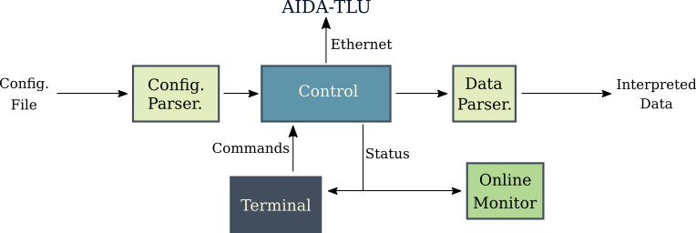

Introduction#
AIDA-TLU#
Repository for controlling the AIDA-2020 Trigger Logic Unit (TLU) with Python using uHAL bindings from IPbus. The Python control software is based on EUDAQ2. The software is a lightweight version written in Python with a focus on readability and user-friendliness. Most user cases can be set with a .yaml configuration file and started by executing a single Python script. For a more in-depth look at the hardware components please take a look at the official AIDA-2020 TLU project. Additionally, take a look at the documentation for this software.
Installation#
IPbus#
You need to install IPbus and its Python bindings to the desired interpreter. Follow the linked tutorial for prerequisites and general installation. Install prerequisites.
sudo apt-get install -y make erlang g++ libboost-all-dev libpugixml-dev python-all-dev rsyslog
sudo touch /usr/lib/erlang/man/man1/x86_64-linux-gnu-gcov-tool.1.gz
sudo touch /usr/lib/erlang/man/man1/gcov-tool.1.gz
Checkout from git and compile the repository.
git clone --depth=1 -b v2.8.12 --recurse-submodules https://github.com/ipbus/ipbus-software.git
cd ipbus-software
make
Next install against the current Python environment.
# Pass current PATH to su shell to build against current environment python
sudo env PATH=$PATH make install
Afterwards you should be able to import uhal in your specific Python environment. When using a custom installation path for IPbus you need to import the library path.
export LD_LIBRARY_PATH=<install_location>/lib
The default install location is located in /opt/cactus/. Then start the controlhub from ipbus-software/controlhub/scripts.
./controlhub_start
The contolhub needs to run for the working of the AIDA TLU, so needs to be started again each time the controlhub is stopped. The default IP address of the TLU is:
192.168.200.30
Python packages#
Install the Python package as usual.
pip install -e .
Usage#
There are multiple ways to use the control software of the AIDA 2020 TLU. If one executes tlu.py in the main directory, the TLU is initialized, configured and starts a run automatically.
python tlu.py
The TLU is configured with the standard tlu_configuration file. To stop the run use ctrl+c.
While configuring the TLU outputs are powered on and off. This leads to problems in AIDA mode where the clock is powered off shortly during configuration. To avoid this at the start of runs in AIDA mode the best way is to use the aidatlu_run.py script. This is started and controlled with the terminal input:
python -i aidatlu_run.py
This initializes the main tlu.py script. One is now able to control the TLU through the Python terminal interface, with the following commands:
tlu.configure()
tlu.run()
tlu.help()
Naturally, this also works for any EUDET mode runs. Runs are stopped with the keyboard interrupt ctr+c. For more commands take a look at the python script aidatlu.py.
All configurations are done by the use of a yaml file (tlu_configuration.yaml).
Tests#
With pytest the AIDA TLU control program can be tested. There is also an implemented AIDA-TLU mock, to allow tests and software development without hardware, which also allows software development and testing without a working IPbus installation. The mock is used as a default.
pytest -sv
To test with connected hardware set an environment variable `HW=True``:
HW=True pytest -sv
You can also set the variable `HW=False`` to test the mock TLU:
HW=False pytest -sv
Structure and communications of the AIDA 202 TLU python control software.
{kind=link}